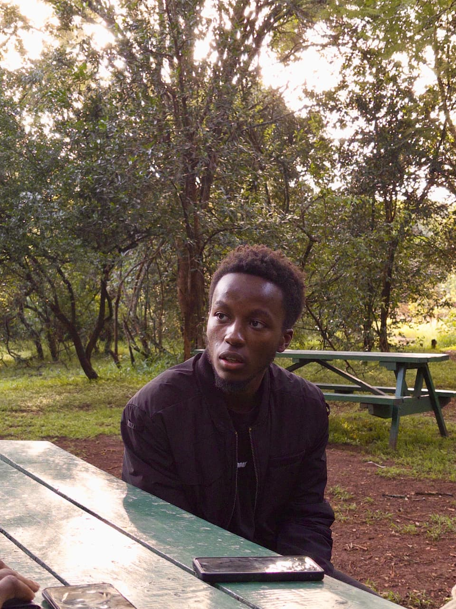

Lameck Huria
Maina
Software engineer — building thoughtful, reliable software from idea to deployment.
Collected — Strathmore University, Nairobi County
Habitat — software engineering, web & backend systems, applied machine learning

fig. 1What I'm Building
Right now I'm building Boolean Batch — a tool that turns messy, real-world queries into clean, batched logic anyone can run. Before that I shipped a full-stack expense tracker with live analytics and budget alerts, and a real-time chat app backed by WebSockets with presence and typing indicators. I like taking an idea from a blank file all the way to something people actually use.
A campus-events platform for Strathmore — student sign-ups, organizer dashboards, and automated reminders — designed end to end, from the data model to the deployed frontend.
Tools of the Trade
Off the Clock
When I'm not shipping code I'm usually chasing a good puzzle — solving chess tactics, taking apart how my favourite apps are built, or losing an afternoon to a rabbit hole about how something actually works under the hood. I also enjoy football and a well-argued debate over which framework is overrated this week.